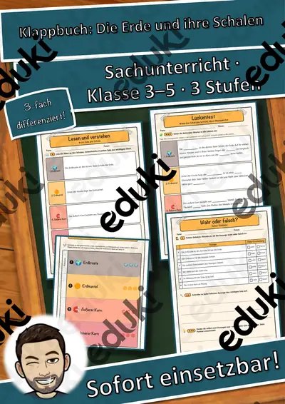
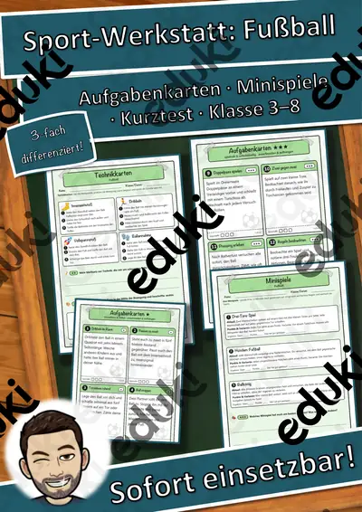
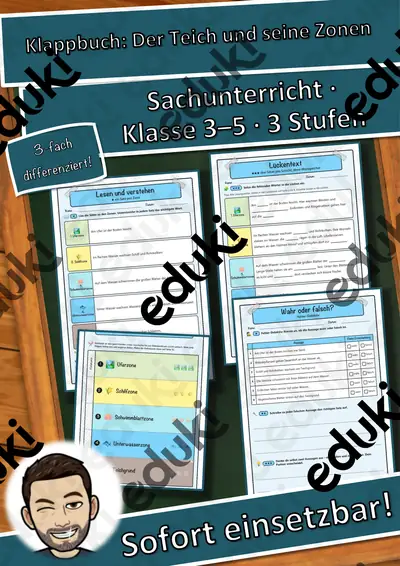
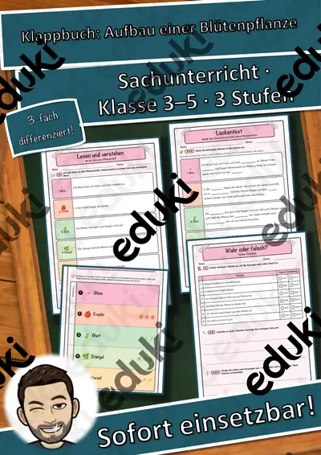
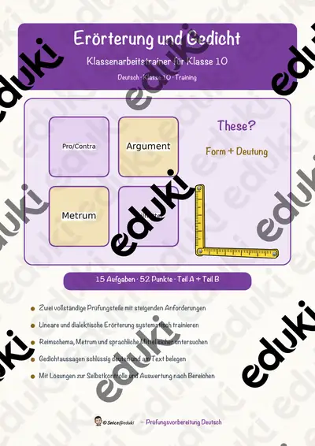
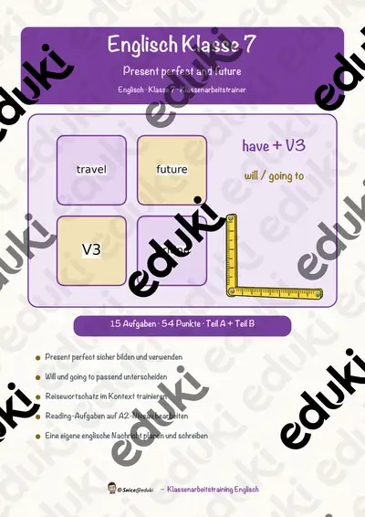
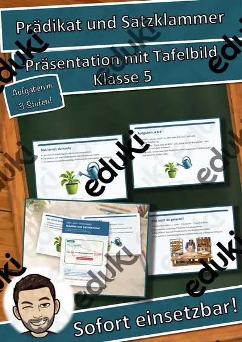
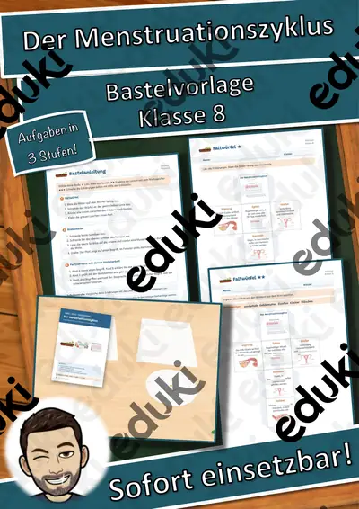

Winter-Lesewelten Tiere im Winter – Differenziertes Lesetraining für die Grundschule (Grundschule, Klasse 1–3)

Lies und male Herbst – Leseverstehen und Ausmalen in 3 Stufen (Klasse 1–2, DaZ, Förder)

Winter-Lesewelten Schnee und Eis – Differenziertes Lesetraining für die Grundschule (Grundschule, Klasse 1–3)

Klappbuch-Werkstatt: Die Erde und ihre Schalen – Sachunterricht, 3 Stufen & Kurztest (Klasse 3–5)

Hörwerkstatt Geräusche: Laut, leise, hoch, tief – Hörstation, 3 Stufen & Test (Klasse 2–4)

Lauschtour Hoerraetsel und Hoer-Bingo

LF 10 Medizinische Fachangestellte: Wundversorgung und Verbandswechsel – Übungen, Lösungen + Lernvideo

Praktikumsplatz finden & Telefonat mit dem Betrieb – Bewerbung & Praktikum, 3 Stufen, mit Hilfen & Lösungen (Klasse 7–10)

Sport-Werkstatt Fussball

Klappbuch-Werkstatt: Der Teich und seine Zonen – Sachunterricht, 3 Stufen & Kurztest (Klasse 3–5)

Schreibwerkstatt Futterglocke fuer Voegel herstellen

Lies und male Zootiere – Leseverstehen und Ausmalen in 3 Stufen (Klasse 1–2, DaZ, Förder)

Hörwerkstatt Geräusche: Geräusche in Natur und Wetter – Hörstation, 3 Stufen & Test (Klasse 2–4)

Berufswahl: Interessen & Stärken-Check – Bewerbung & Praktikum, 3 Stufen, mit Hilfen & Lösungen (Klasse 7–10)

Hörwerkstatt Geräusche: Geräusche unterwegs – Hörstation, 3 Stufen & Test (Klasse 2–4)

Klappbuch-Werkstatt: Aufbau einer Blütenpflanze – Sachunterricht, 3 Stufen & Kurztest (Klasse 3–5)

Klappbuch-Werkstatt: Schichten unter unseren Füßen – Sachunterricht, 3 Stufen & Kurztest (Klasse 3–5)

Sport-Werkstatt Basketball

Hörwerkstatt Geräusche: Geräusche zu Hause – Hörstation, 3 Stufen & Test (Klasse 2–4)

Klappbuch-Werkstatt: Der Wald von oben nach unten – Sachunterricht, 3 Stufen & Kurztest (Klasse 3–5)

Schreibwerkstatt Vorgangsbeschreibung: Papierflieger falten – 3 Stufen & Kurztest (Klasse 3–5)

Schreibwerkstatt Vorgangsbeschreibung: Tanzende Rosinen – 3 Stufen & Kurztest (Klasse 3–5)

Schreibwerkstatt Vorgangsbeschreibung: Knete selbst herstellen – 3 Stufen & Kurztest (Klasse 3–5)

Secrets of the Chestnut Tree – Lesespurgeschichte mit Rätselaufgaben auf Englisch (Klasse 8)

Schreibwerkstatt Vorgangsbeschreibung: Obstsalat zubereiten – 3 Stufen & Kurztest (Klasse 3–5)

Klassenarbeitstrainer Mathematik Klasse 9 – Quadratische Funktionen und Pythagoras

LF 4 Kfz-Mechatroniker/-in: Zulassungsrechtliche Vorgaben bei Umrüstungen prüfen – Übungen, Lösungen + Lernvideo

Inside the Bunsen Burner – Lesespurgeschichte mit Rätselaufgaben auf Englisch (Klasse 9)

LF 8 Medizinische Fachangestellte: Urinschnelltest und Probengewinnung – Übungen, Lösungen + Lernvideo

LF 4 Medizinische Fachangestellte: Frakturversorgung und Immobilisation in der Praxis – Übungen, Lösungen + Lernvideo

Lesewinter Materialpaket Klasse 2, 3 und 4: 30 Wintertexte in je 3 Stufen – tägliche Lesezeit, Lesefluss-Training, Hörfassung (einmal zahlen)

Lesewinter Klasse 4: 10 Wintertexte in 3 Stufen – tägliche Lesezeit, Lesefluss-Training, Tandem-Lesen, Hörfassung

Lesewinter Klasse 3: 10 Wintertexte in 3 Stufen – tägliche Lesezeit, Lesefluss-Training, Tandem-Lesen, Hörfassung

Schreibwerkstatt Vorgangsbeschreibung: Pfannkuchen backen – 3 Stufen & Kurztest (Klasse 3–5)

Lesewinter Klasse 2: 10 Wintertexte in 3 Stufen – tägliche Lesezeit, Lesefluss-Training, Tandem-Lesen, Hörfassung

Klassenarbeitstrainer Deutsch Klasse 10: Erörterung und Gedichtanalyse

Bundesminister für Arbeit und Soziales - Alexander Schweitzer

Lies und male Ostern – Leseverstehen und Ausmalen in 3 Stufen (Klasse 1–2, DaZ, Förder)

LF 10 Verkäufer/-in: Professioneller Umgang mit schwierigen Kundensituationen – Übungen, Lösungen + Lernvideo

Lies und male Frühling – Leseverstehen und Ausmalen in 3 Stufen (Klasse 1–2, DaZ, Förder)

Klassenarbeitstrainer Englisch Klasse 7 Present Perfect und Future Forms

LF 3 Verkäufer/-in: Zahlungsarten vergleichen und Kassenabrechnung – Übungen, Lösungen + Lernvideo

Prädikat und Satzklammer – Präsentation mit Tafelbild (Klasse 5)

Der Menstruationszyklus – Bastelvorlage (Klasse 8)

Laufdiktat-Werkstatt Materialpaket: 3 Themenhefte Sachwissen – 45 Sätze × 3 Stufen, Lineaturen, Quiz, Hördiktate (Klasse 1–4)

Klassenarbeitstrainer Englisch Klasse 6 – Simple Past und Present Progressive

Baking Christmas Cookies – Lesespurgeschichte mit Rätselaufgaben auf Englisch (Klasse 8)

Mein Recht im Alltag Materialpaket: 3 Einheiten – Alltag den Kinderrechten zuordnen und selbst reflektieren (Grundschule
Keine Materialien gefunden – versuch einen anderen Suchbegriff oder Filter.